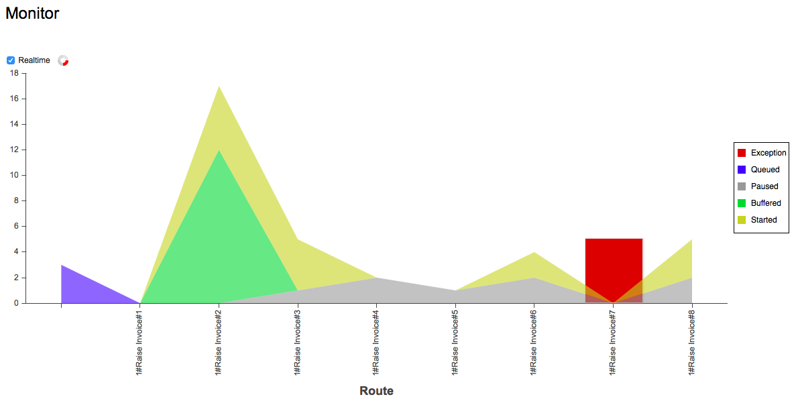

The monitoring tab shows all service activity. On the horizontal axis you will see sequences and services in use. The vertical axis indicates how many messages are being processed. A spinner at the top of the chart shows when the Services Package is actively processing messages.
